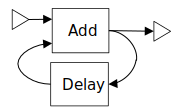

Actris is an automatic verifier for dynamic dataflow networks and actors. The verifier checks the networks and actors for functional correctness with respect to contracts. The language used to express actors is essentially a subset of the CAL Actor Language.
Actris translates actors, networks and their contracts into code in the Boogie intermediate verification language. The Boogie verifier then carries out the rest of the proof by generating verification conditions that are discharged by the Z3 SMT solver.
As an example, consider the network illustrated below:
It consists of the two actors Add and Delay. The source code of these actors is given below.
actor Add int in1, int in2 ==> int out1:
action in1:[i], in2:[j] ==> out1:[i+j] end
end
actor Delay(int k) int in1 ==> int out1:
initialize ==> out1:[k] end
action in1:[i] ==> out1:[i] end
end
In Actris, also networks are described in a similar format to that of actors:
network SumNet int in1 ==> int out1:
contract in1:1 ==> out1:1
requires 0 <= in1[@]
ensures out[@] >= in1[@]
ensures out[0] = in1[0]
ensures 0 < @(out) ==> out[@] = out[@-1]+in1[@]
end
contract invariant tokens(b,1)
action invariant b[0] = 0
action invariant 0 <= b[@]
entities
add = Add();
del = Delay(0);
end
structure
a: in1 --> add.in1;
b: del.out1 --> add.in2;
c: add.out1 --> out1;
d: add.out1 --> del.in1;
end
end
Here the contract specifies the intended behaviour of the network: The network takes one input token on the iport in1
and outputs one token on the outport out1. For more details on what e.g. the requires, ensures and
invariant keywords mean, we refer to the papers mentioned below.
Actris is able to automatically prove that the network satisfies its contract. It does so by translating the contracts, actors and networks into input for the Boogie program verifier. The Boogie verifier then carries out the rest of the proof by generating proof obligations which are discharged using the Z3 SMT solver.
The tool is written in Scala and should be cross-platform. It has been tested on macOS 10.11, Ubuntu and Windows 7 and requires Java 7 or later. It also requires that the Boogie program verifier is available on the system PATH.
The tool can be installed by running the command make install in the root folder of the distributable zip-file.
To verify the example described above on a UNIX-based system, run the command, assuming that actris is available
on the path and that the actors and networks are saved in the files Add.actor, Delay.actor and SumNet.actor:
actris Add.actor Delay.actor SumNet.actor
On Windows systems, the actris.bat file can be used to run the tool.
Starting from v1.0.0, Actris supports a new verification approach, based on finding static schedules for contracts.
This can significantly reduce the number of invariant annotations needed for verification.
To use this approach, Actris should be run with the --schedule parameter:
actris --schedule:SumNet Add.actor Delay.actor SumNet.actor
The scheduling backend depends on the SPIN model checker. Hence, SPIN should be available on the PATH. Additionally
the scheduling backend also uses the Java API of the Z3 SMT solver as well as the ScalaZ3
binders.
The principles behind the tool has been documented in the following publications: